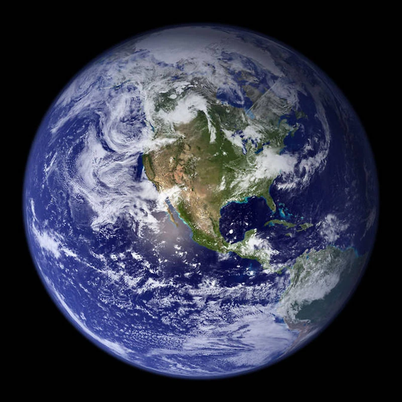

阅读科学来源
从可观测宇宙，抵达地球
从浩瀚，
到我们。
A universe to explore. A place to call home.
越过星系的海洋，穿行恒星之间。
用七个尺度，重新认识我们在宇宙中的位置。
NGC 1300棒旋星系 · 哈勃望远镜实拍
01 / THE JOURNEY OF SCALE
无限辽阔，层层靠近。
宇宙有多大？
从最大的视野，找到最熟悉的坐标。
COSMIC ATLAS01 / 07
每一点微光，都可能是一座星系。
尺度约 10¹¹ 光年结构示意 · 非真实比例
当前位置：可观测宇宙
A LITTLE PERSPECTIVE
我们望向远方，也在望向过去。
光年是距离单位。
一光年，是光在真空中一年走过的距离，
约 9.46 万亿千米。
02 / OUR SOLAR NEIGHBOURHOOD
一颗恒星，八个世界。
离开银河的远景，走近太阳的邻居。
点击行星，发现各不相同的世界。
太阳太阳系唯一的恒星
约 46 亿年前，一团气体与尘埃在引力作用下汇聚，
太阳和它的行星家族，由此诞生。
大小与间距未按比例
03
EARTH
地球
类地行星- 赤道直径
- 距太阳平均距离 · 约
- 公转周期 · 约
1 AU ≈ 1.496 亿千米，即地球到太阳的平均距离。海王星之外，还有柯伊伯带与更遥远的世界 ↗
LIGHT TRAVEL / 光的时钟
此刻看到的，是多久以前？
选择一个天体，看看它的光抵达地球需要多久。
8 分 19 秒
当你看到阳光，看到的是约 8 分钟前的太阳。

SOLAR SYSTEM / PLANET 03Blue Marble · NASA Earth Observatory · 合成影像03 / THE PALE BLUE HOME
穿过星辰大海，
我们回到地球。
在浩瀚的宇宙里，这颗被海洋与云层包裹的岩石行星，是我们目前唯一已知拥有生命的世界。
山川、潮汐、每一次呼吸，以及所有关于远方的想象，都从这里开始。
- 赤道直径
- 12,756 km
- 表面被海洋覆盖 · 约
- 71 %
- 天然卫星
- 1 颗
KEEP WONDERING / 保持好奇
再多问一个为什么。
一些让宇宙更容易理解的小问题。
宇宙约 138 亿岁，为什么可观测直径约 920 亿光年？
因为光传播的同时，空间本身也在膨胀。那些很久以前发出光的区域，如今已远得多。约 920 亿光年描述的是可观测范围在今天的直径；138 亿年描述的是宇宙年龄，两者不是同一个量。不同宇宙学参数会带来略有差异的估计。
可观测宇宙的边界，就是宇宙的尽头吗？
不是。它由宇宙年龄、光的传播以及膨胀历史决定，表示信息能到达我们的范围。可观测范围之外可能还有更广阔的宇宙；整个宇宙有多大、是否无限，目前没有确定答案。
星系、恒星、行星，分别是什么？
星系是由引力联系在一起的大型系统，包含大量恒星、气体、尘埃和暗物质，银河系就是一个例子。太阳是一颗恒星，内部核聚变让它发光发热。地球是一颗绕太阳运行的行星，月球则是绕地球运行的天然卫星。
为什么这些天体不能直接画在同一张真实比例图里？
尺度差异太大。如果把地球画成直径 1 厘米的小球，太阳约在 117 米外，直径约 1.09 米；月球则在约 30 厘米外。本页按层级切换视野，结构图及行星陈列均不表示真实大小、距离或当前轨道位置。